Men's Premier
Flagship side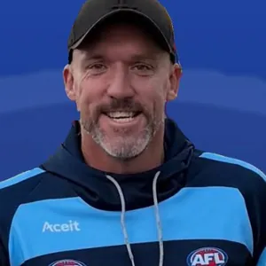
Jordan “Jordy” DoeringHead Coach+ 2 assistants
The UNSW-ES Bulldogs are one of the oldest and most successful Australian Rules clubs in Sydney, and from 2027 a foundation club of the Sydney Football League. Men, women, students and locals all play here. Come and build it with us.
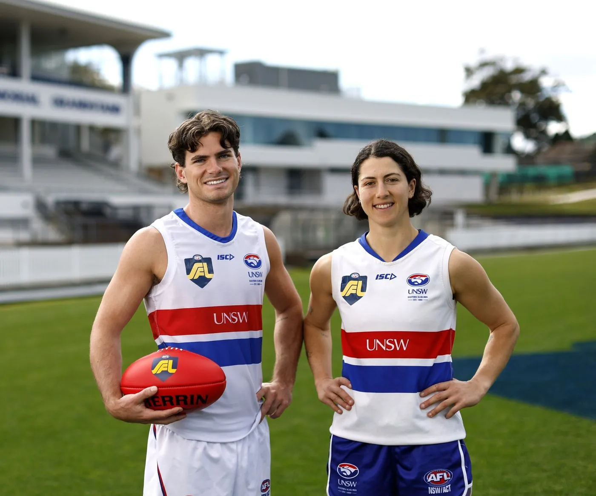
Former Carlton player. Two-time VFL club champion. Senior coach in Canberra, and on the AFL Sydney-Canberra representative coaching panel in 2026. Jordy has coached at almost every level of the game, and in 2027 he leads the Bulldogs into the Sydney Football League era.

All registrations run through PlayHQ, the AFL's official platform. Early-bird fees close 31 January 2027; Round 1 is Saturday 3 April 2027. Beginners are welcome and you don't need any experience.
Go to our PlayHQ registration page and sign up, or log in with your 2026 details.
Choose the UNSW-ES Bulldogs, pick your fee category, and pay in PlayHQ. New players receive playing gear.
Sign in to PlayHQ first, then email president@unswesbulldogs.com.au with your name, old club, email and DOB, and we'll arrange the clearance.
Grab a one-game "come & try" for $65, or just rock up to pre-season training below. Beginners welcome.
| Category | Early | Standard |
|---|---|---|
| Senior (men & women) | $595 | $695 |
| UNSW student (ID required) | $475 | $550 |
| Men's U19.5 & Women's U20 | $525 | $595 |
| Transferring senior | $595 | $595 |
| ADF personnel | $475 | $475 |
| Listed VFL player | $50 | $50 |
| Come & try (1 game) | $65 | $65 |
Everyone trains together. Walk-ins welcome, no registration needed. Bring boots and runners.
Find your team, see who coaches it and get in touch. Training times for each team will be confirmed before the season.
 Director of Coaching · SFL programRyan O'KeefeTwo-time Swans premiership player and 2012 Norm Smith Medallist. Oversees coaching across our SFL teams.Read more →
Director of Coaching · SFL programRyan O'KeefeTwo-time Swans premiership player and 2012 Norm Smith Medallist. Oversees coaching across our SFL teams.Read more →

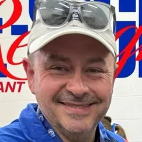
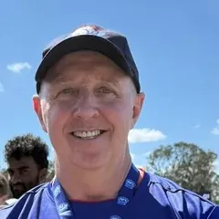
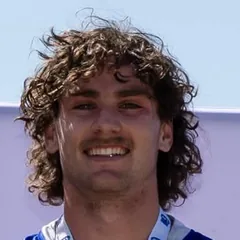
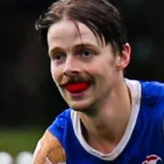
Our first season in the Sydney Football League. Fixtures, results and ladders will appear here, live, once the season starts.
Club announcements, milestones and what's on.

Tom Williamson stays on as Women's SFL head coach for 2027, his sixth season in charge.
Read more →
The two-time Swans premiership player and Norm Smith Medallist will oversee coaching across our SFL teams.
Read more →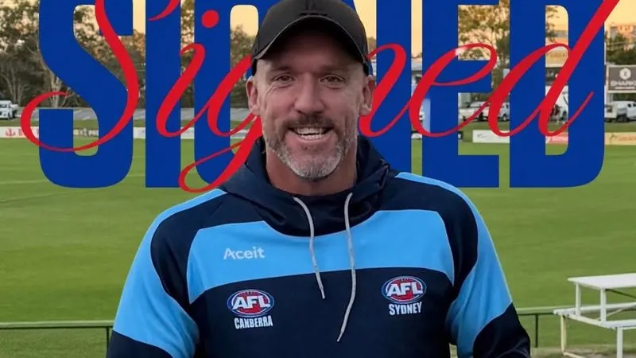
Former Carlton player and two-time VFL club champion Jordy will lead the Bulldogs men into our first Sydney Football League season.
Read more →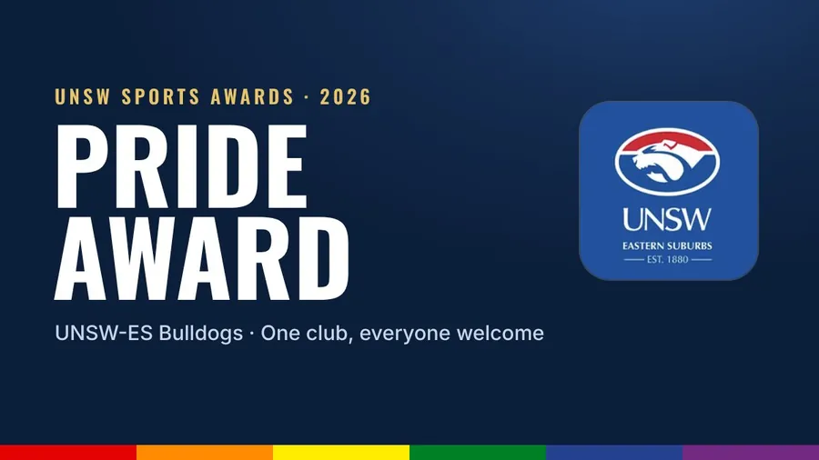
Recognised for our leadership in making footy welcoming for the LGBTQI+ community, following the club's 2024 award.
Read more →
The Bulldogs are one of nine clubs awarded a licence for the SFL, NSW's new premier competition from 2027. The clubs were announced at Henson Park.
Read more →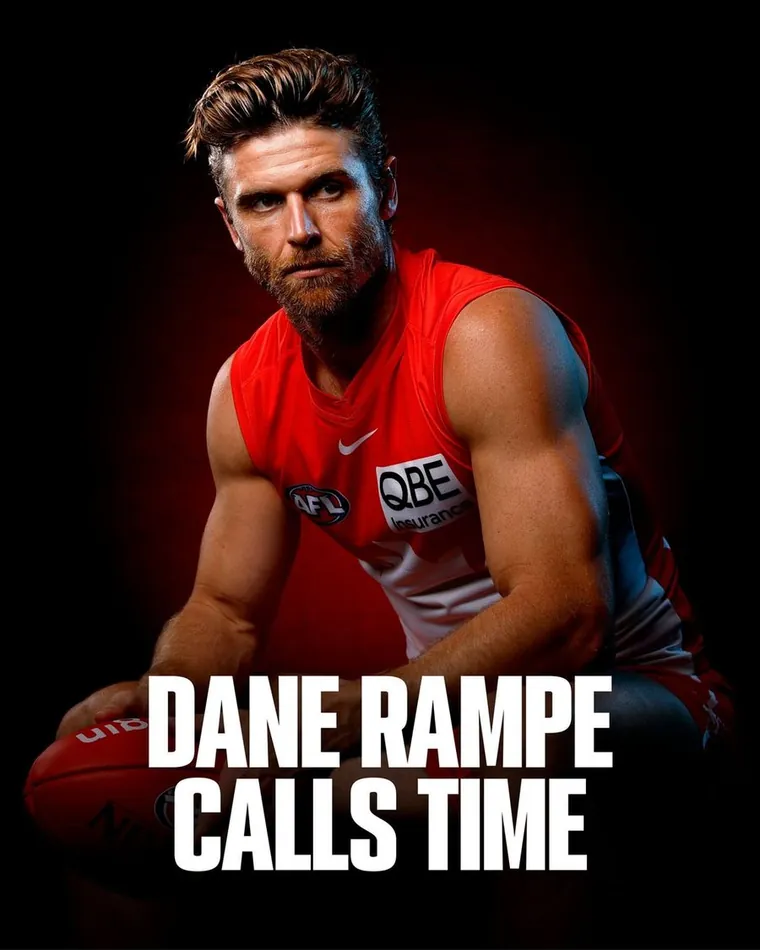
Before a Bob Skilton Medal and All-Australian honours with the Swans, Dane Rampe dominated local footy in Bulldogs colours.
Read more →The UNSW-ES Bulldogs formed in 1999, when the University of New South Wales club merged with East Sydney, founded in 1880. We're now one of the largest AFL clubs in Sydney, and a foundation club of the new Sydney Football League for 2027.
We play to win and we look after our own. Everyone is held to the same standard: honest, respectful, accountable and together. Students, locals, first-gamers and premiership players, men and women, all pull on the same jumper.
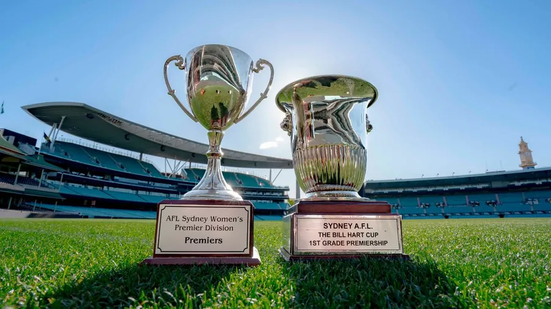
Nineteen Bulldogs have gone on to AFL and AFLW lists. Tap a player to read their story.
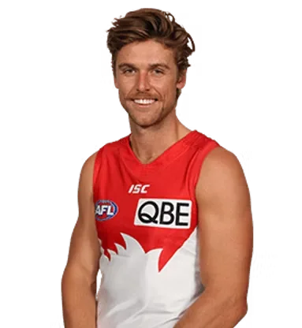
AFL AFL
AFL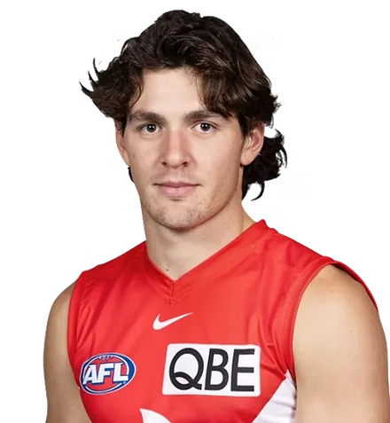
AFL AFL
AFL AFL
AFL AFL
AFL AFL
AFL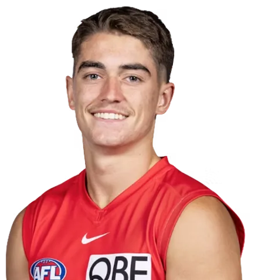
AFL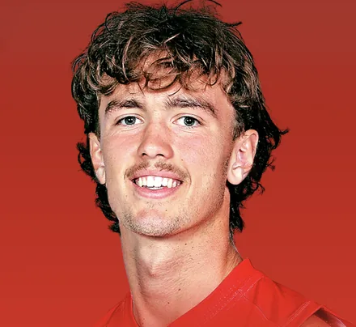
AFL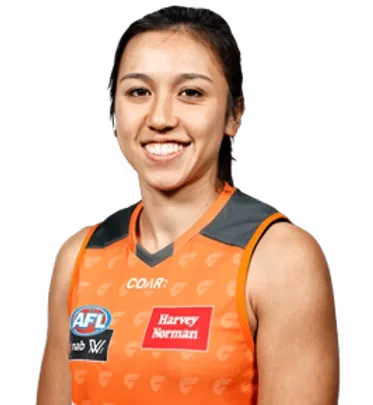
AFLW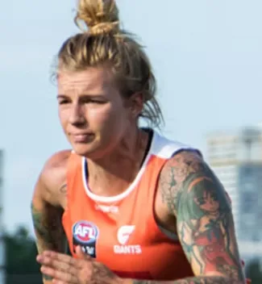
AFLW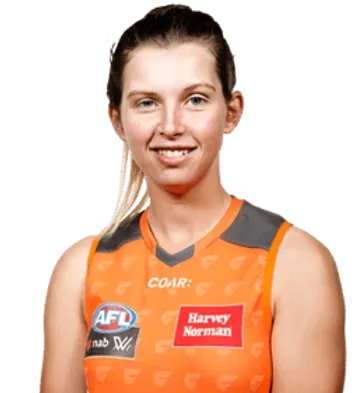
AFLW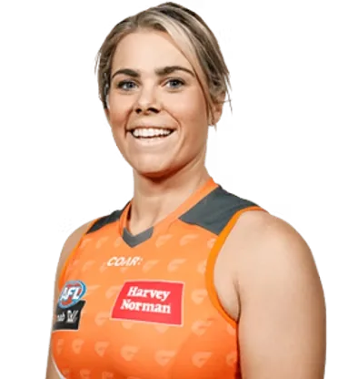
In memoryIn memory · 1991-2020 AFLW
AFLWWe're a not-for-profit community club. Our partners and UNSW help keep fees down.
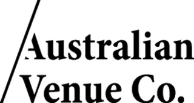
Runs more than 200 pubs, bars and venues across Australia and New Zealand.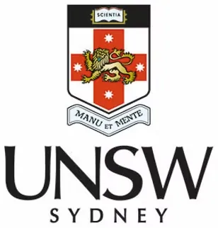
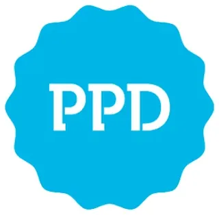
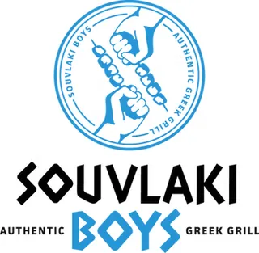
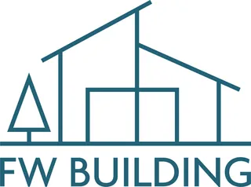
Keen to play, help out, or partner with us? Pick where you fit, or contact the club directly.
Game days, team news and the fixture drop
Our latest Instagram posts. Follow along on Instagram, Facebook and TikTok.